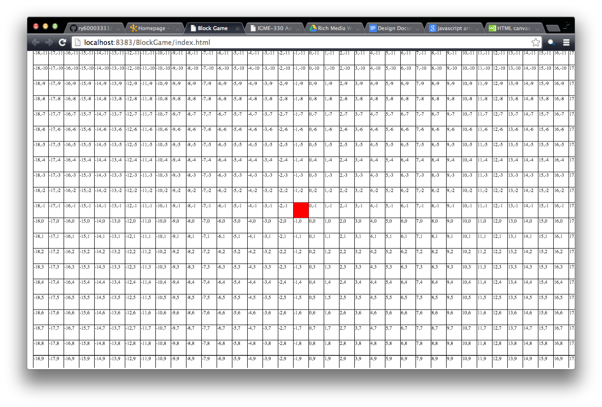
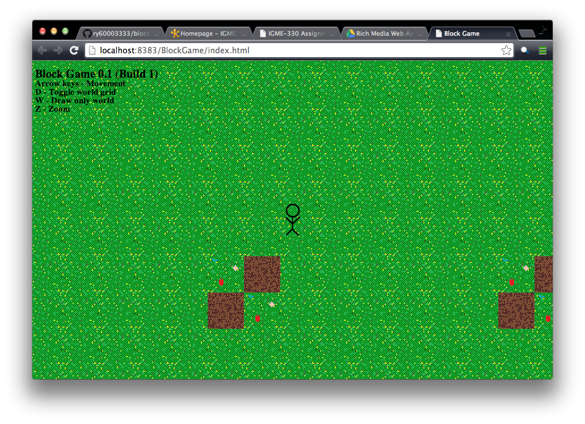
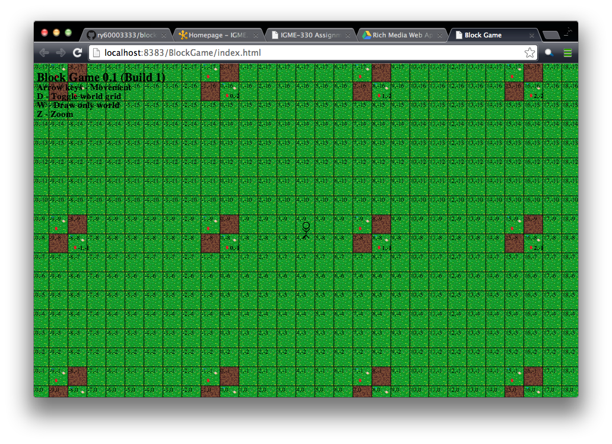

Introduction
Many games are quite limited in how they are made - there always seems to be some kind of end, some limit or barrier that cannot be passed.
Normally, this is a physical limiter, like a large body of water or invisible wall. On the other hand, some games expand as you play.
Minecraft is one such game. The farther you go, the larger your world gets. For our project, we decided to emulate that concept in a 2D game.



Concept
Mechanically, a 2D game world that dynamically expands as you play, getting larger and larger the further outwards you go. Visually, a story about a giant robot trying to build himself up using his environment and the materials he finds within it.
Story
WES doesn’t remember anything. Of course, he’s not sure if there is anything to actually remember. For all he knows, he just spontaneously appeared on the surface of this planet, here to live his life.
Well, not actually live, either. He is a robot, that much he knows - something artificial, a not-living-but-is...well...just is. So, what is he supposed to do?
Does it have something to do with these appendages on his body? WES flails around for a bit, testing his limbs, and then stops. The area around him has been demolished, with exposed metals now sticking out of the ground.
He walks over to examine it, but it suddenly rises and hits him. He sees little green text in front of his face:
“+1 Metal”
Okay, so what does THAT mean? Did he somehow absorb the metal? Apparently, he had. So, he had 1 more metal. Yipee.
WES guessed that collecting metals was probably better than standing around doing nothing, and so decided his quest - to collect as much metal as possible!
Gameplay
The player controls WES, a giant robot on some unknown planet. WES has no real known purpose (yet), but decides to collect metal by reshaping his ever-expanding environment.
Collecting metals will upgrade WES, and give him better abilities, like faster block smashing, longer range metal collection, etc.
WES will also eventually gain the ability to build structures that perform various tasks, like mining metals for him.
WES starts out very simple, being able to only walk, jump, and flail, and progressively becomes a better robot. It is unknown yet if we will include enemies.
Controls
Player uses the keyboard arrow keys and WASD to move, jump, and flail. More keyboard keys will be used later on, when WES gains more functionality in-game.
User Interface
The user interface will be comprised of a box telling how much of each metal WES possesses currently, and what you need to upgrade.
There may be more later on, but this is all the game will need ATM.